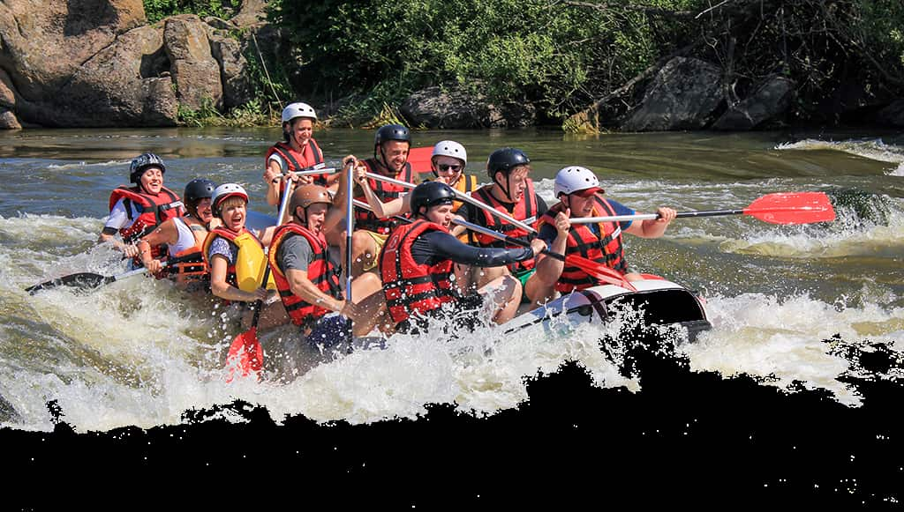

“A descida pelas corredeiras do Mundaú foi a aventura mais emocionante que já vivi em Alagoas. Os guias são extremamente atenciosos e profissionais!” — Marcos Vieira, turista de São Paulo


“A descida pelas corredeiras do Mundaú foi a aventura mais emocionante que já vivi em Alagoas. Os guias são extremamente atenciosos e profissionais!” — Marcos Vieira, turista de São Paulo
Do rio calmo às corredeiras intensas, temos roteiros para famílias, aventureiros e quem busca adrenalina pura. Conheça nossos passeios e escolha sua próxima aventura no Nordeste.
Ver Todos os Passeios
Toda a nossa equipe é certificada em primeiros socorros e resgate em águas correntes. Equipamentos revisados antes de cada saída e botes inspecionados diariamente garantem que sua aventura seja emocionante e segura.
Seja sua primeira vez em um rio ou você já tenha experiência em corredeiras classe IV, temos o passeio certo. Nossos guias adaptam o ritmo e a rota conforme o perfil do grupo.


Nossos roteiros passam por paisagens únicas de Alagoas, unindo a adrenalina do rafting à riqueza natural e cultural da região. Cada passeio inclui paradas para apreciar a fauna e a flora local.